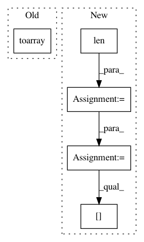

c170ee46b0494058c9d4dd2e07f21a4be7a0ba74,dscribe/descriptors/acsf.py,ACSF,create_single,#ACSF#Any#Any#,153
Before Change
output = self.acsf_wrapper.create(
system.get_positions(),
system.get_atomic_numbers(),
dmat.toarray(),
neighbours,
indices,
)
After Change
// Calculate the sparse distance matrix using the radial cutoff to
// reduce computational complexity from O(n^2) to O(n log(n))
n_atoms = len(system)
dmat = system.get_distance_matrix_within_radius(self.rcut, "coo_matrix")
neighbours = dscribe.utils.geometry.get_adjacency_list(dmat, return_values=False)
dmat_dense = np.full((n_atoms, n_atoms), sys.float_info.max) // The non-neighbor values are treated as "infinitely far".
dmat_dense[dmat.col, dmat.row] = dmat.data
// Calculate ACSF with C++
output = self.acsf_wrapper.create(
In pattern: SUPERPATTERN
Frequency: 3
Non-data size: 5
Instances
Project Name: SINGROUP/dscribe
Commit Name: c170ee46b0494058c9d4dd2e07f21a4be7a0ba74
Time: 2019-07-17
Author: lauri.himanen@aalto.fi
File Name: dscribe/descriptors/acsf.py
Class Name: ACSF
Method Name: create_single
Project Name: keras-team/autokeras
Commit Name: 71432d1890209628e189edf04d7d623160943718
Time: 2019-12-18
Author: 33369174+Davidsirui@users.noreply.github.com
File Name: autokeras/hypermodel/preprocessor.py
Class Name: TextToNgramVector
Method Name: transform